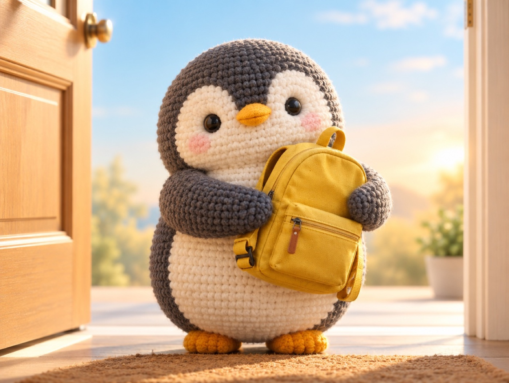

🐧 EVERYDAY LIFE⚡ 22 SEC
Too much worry can sound like "I don't believe in you" 💛

Worried Words
Worried words like "Are you OK? Did you forget anything?" can sound like "I don't believe in you."
Every Day
If you hear them every day, you start to think, "I can't do it anyway."
Say Instead
Instead, try saying, "It's OK, you can do it," and "I'm always on your side."
⚡ TRY IT
A week of "see you later"
Every morning, the little penguin goes out. What do you say?
I can't do it anyway…
Maybe I will fail again…
Hmm… can I do it?
I think I can do it!
I can do it! I will check my bag by myself!
💪 Confidence
🌟 You trusted the little penguin all week. Now it checks its bag by itself!
🙂 Half worry, half trust. The little penguin is still not sure.
🌧 Worried all week… Now the little penguin says, "I can't do it anyway."
Trust Works
People who feel trusted start to fix things by themselves.
For Everyone
This works for friends and yourself too.
📚 I learned this from the Japanese blog "Panda no Ondo".
PREVIOUS POST
When you can't decide, toss a coin and watch your first feeling